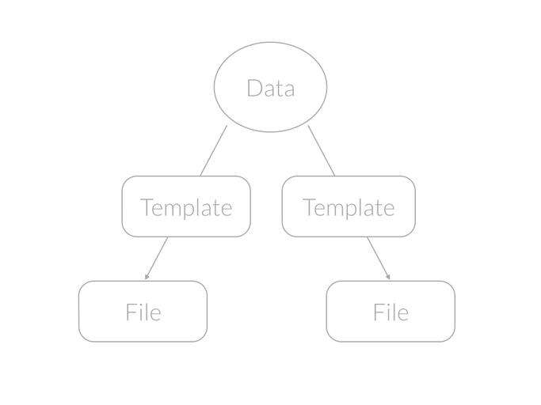

coz
Flexible generator, which makes your project clean and maintainable.


Table of Contents
About coz
What's This?
The basic idea of coz is that creating files from files.
- Writing a meta file called .bud file.
- Running
coz rendercommand. - Files will be generated!

What For?
Automation. Generating files makes your project clean and maintainable.
You can define a single datasource and distribute it in various forms.
For example,
- Generate Javascript and Python entity from database definition.
- Generate
package.jsonandbower.jsonsharing same meta data. - Generate Web API document and Swift client entity from json schema objects.
- Generate empty test case files from project files.
Why This?
- Lightweight and fast
- coz does nothing bud file templating, it's very fast.
- Unopinionated and flexible
- coz could be used to any kind of strings files.
- Bunch of options to manipulate files.
- Could be used by CLI or programmatically.
- Simple and extensible
- coz provides ways to customize, like registering you own template engine.
Getting started
Requirements
Installation
coz is available as an NPM package.
# Install coz as a global module.
$ npm install coz -gOr you can install it without -g option and use Programmatic API.
For more details, see tutorial section "01 - Installing coz".
Quickstart
.who-likes-what.txt.bud (bud file)
/**
* .who-likes-what.txt.bud
* This is a bud file for "examples/01-minimum-demo"
*/
// Exports as a Node.js module.
module.exports = {
// Template string. By default, parsed by Handlebars engine.
tmpl: '{{#each members}}Hi, my name is {{@key}}. I like {{this}}.\n{{/each}}',
// Overwrite when already existing.
force: true,
// File path to write out.
path: 'who-likes-what.txt',
// File permission.
mode: '444',
// Data to render.
data: {
members: {
"Mai": "apple",
"Tom": "Orange",
"Rita": "Banana"
}
}
};As you see, .bud file is actuary a JavaScript file and could be exported a Node.js module.
Save this file as .who-likes-what.txt.bud and then, run:
# Render the bud file
$ coz render ".who-likes-what.txt.bud"This will generate a file named who-likes-what.txt.
For more details, see tutorial section "02 - Rendering bud files".
Programmatic API
coz provides programmatic API which enables you to execute coz commands from Node.js program.
For more details, see tutorial section "04 - Using programmatic API".
Specifications
Bud file specification.
A bud contains file meta data like witch template to use, where to render it, what permission to give, and so on.
You can specify bud data by writing .bud file, which is actually a javascript file and could be written nodejs format.
module.exports = {
path: 'my_file.txt',
tmpl: '.my_file.txt.hbs',
data: require('./.my_data')
}And bud could be an array like:
module.exports = [
{path: 'my_file.txt', /*...*/},
{path: 'my_other_file.txt', /*...*/},
]Or an async function.
module.exports = function(callback){
myAsync(function(data){
var error = null;
callback(err, data);
});
}For more details, see tutorial section "03 - Mastering coz bud".
Supported properties
| Name | Type | Description |
|---|---|---|
| engine | string|object | Template compile function or name of function |
| cwd | string | Working directory path |
| data | object | Data to template render with |
| mkdirp | boolean | Make parent directories if needed |
| setup | object | Properties to set engine |
| force | boolean | Should overwrite file when already exists, or not |
| mode | string|number | File permission |
| path | string | Destination file path. If not provided, guess from bud file path |
| tmpl | string|function | Template file path or registered template name or template function |
Links
Tutorials
- 01 - Installing coz
- 02 - Rendering bud files
- 03 - Mastering coz bud
- 04 - Using programmatic API
- 05 - Customizing coz
Documents
Reports
License
This software is released under the MIT License.
About this project
Author
Donation
Support this project and others by okunishinishi via gratipay.